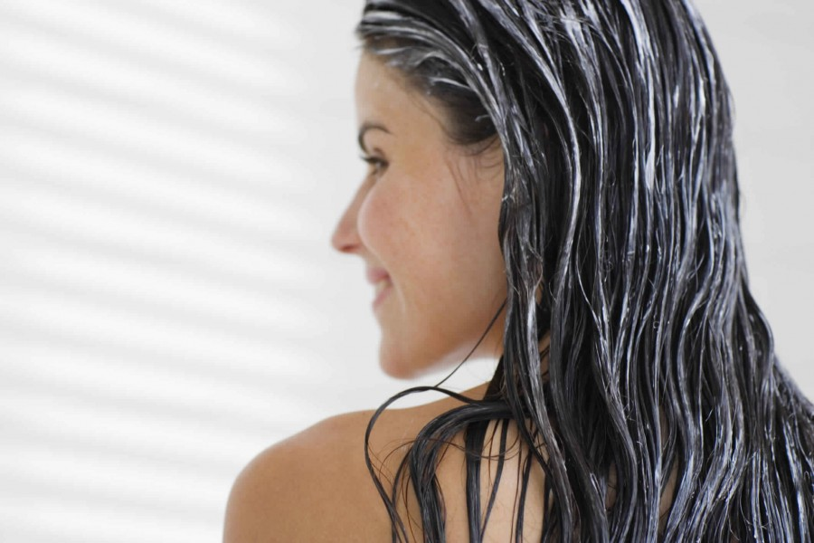

<!-- We don't need full layout here, because this page will be parsed with Ajax-->
<!-- Top Navbar-->

<div class="pages">
  <!-- Page, data-page contains page name-->
  <div data-page="about" class="page">
    <!-- Scrollable page content-->
    <div class="page-content">
      <div class="navbar">
  <div class="navbar-inner">
    <div class="left"><a href="#" class="back link"> <i class="icon icon-back"></i><span>العوده </span></a></div>
    <div class="center sliding">   </div>
    <div class="right">
       
      <!-- Right link contains only icon - additional "icon-only" class--><a href="#" class="link icon-only open-panel"> <i class="icon icon-bars"></i></a>
    </div>
  </div>
</div>
      <div class="content-block presentcon">
<div class="row">
  <div class="col-100">

  </div>
</div>

<div class="row t">
  <div class="col-100">
<h4>     ماسك الموز و العسل     :  </h4>
الموز و العسل يحتويان على مواد مرطبه تجدد الشعر و تعيد له الحيوية و الرطوبة ، قومي بإحضار ثمرة موز مهروسة مع بيضة و 3 ملاعق لبن و 3 ملاعق عسل مع 5 ملاعق زيت زيتون .

بوعاء اخلطي المكونات معًا  حتى تحصلين على ماسك متجانس ثم افرديه على شعرك و اتريكه لمدة ربع ساعة من ثم ايغسل.

 يترك هذا الماسك شعرك ناعم و رطب يمكنك تطبيقه أسبوعيًا
 <h4>ماسك البيض :</h4>
البيض من أهم المواد الغذائية التي تصلح لكل أنواع الشعر بلا استثناء لانه مصدر من مصادر البروتين حيث يحتوي الصفار على بعض من الدهون التي تساعد على تغذية الشعر و ترطيبه خصوصًا لو كان تالفًا يمكنك تطبيق ذلك بإستخدام بيضه كامله لوكان  شعرك طويل جاف و مجهد حتى تحصلين على الشعر الصحي الطبيعي الملمس المتجانس بشكل كبير

قومي إحضار بيضة كاملة لو كان شعرك عادي أو جاف و بياض البيضة في حالة الشعر الدهني مع 4 قطرات من زيت الليمون او عصير الليمون ، يمكنك إحضار البيض على حسب طول الشعر و كثافته ، احضري البيض و ضعي زيت الليمون للتخلص من رائحة الزهامة للبيض ثم قومي بخفق البيض بشكل جيد و افردي البيض على كل شعرك و غطيه بكيس بلاستيك ثم اعسلي شعرك بالشامبو و الماء البارد يمكنك تكرار الماسك شهريًا لتجديد الشعر التالف 
<h4> ماسك الصبار و زيت الزيتون :</h4>
الصبار من النباتات التي تستخدم لصحة الشعر و البشرة يمكنك استخدام هلام الصبار لتحسين حالة الشعر احضري 3 ملاعق من جل الصبار مع 4 ملاعق من زيت الزيتون و 3 ملاعق من صفار البيض .

قومي بتسخين الزيت قليلًا و اخلطه بالصبار و افرديه على الشعر بفرشاة ثم اغسلي شعرك بالماء و الشامبو و كرري ذلك الماسك يوميًا لمدة 15 يوم للوصول للشعر الصحي في اقل وقت
  </div>
</div>
   </div>
    </div>
  </div>
</div>